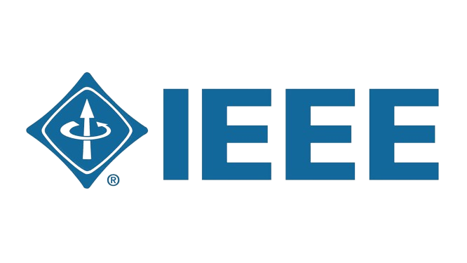

La estandarización en sistemas de redes y comunicaciones es fundamental para garantizar la interoperabilidad, la compatibilidad y la eficiencia en la comunicación entre dispositivos y sistemas de diferentes fabricantes. Esto se logra a través de normas desarrolladas y mantenidas por diversas organizaciones internacionales y nacionales. Entre las más destacadas se encuentran el IEEE, TIA-EIA, ISO, ANSI e ICONTEC.
A continuación te damos una descripción de estas organización y sus principales características
| Logo | Nombre | Definición | Principales normas | Equivalente NTC | Enlace |
|---|---|---|---|---|---|
|  | Instituto de Ingenieros Eléctricos y Electrónicos (IEEE) | Es conocido por sus estándares relacionados con las redes de área local (LAN) y las tecnologías inalámbricas, como Ethernet y Wi-Fi |
|
En el contexto de las normas colombianas, el equivalente de IEEE 802, es NTC 5624. Esta norma técnica colombiana, conocida como "Tecnologías de la Información. Redes de Área Local y Metropolitana", está basada en la familia de estándares IEEE 802 y cubre los requisitos y especificaciones para las redes de área local (LAN) y redes de área metropolitana (MAN). | |
| Instituto Colombiano de Normas Técnicas y Certificación (ICONTEC) | Es el organismo nacional de normalización en Colombia y juega un papel importante en la adopción de estándares internacionales y en el desarrollo de normas nacionales relacionadas con las redes y las comunicaciones. |
|
|||
| Organización Internacional de Normalización (ISO) | Es una organización internacional que desarrolla estándares para una amplia gama de industrias, incluidas las telecomunicaciones. Sus estándares son fundamentales para comprender la arquitectura de redes y comunicaciones. |
|
En Colombia, la norma técnica colombiana NTC 3495 adopta y equivale a la norma ISO/IEC 11801. Su título completo es "Tecnologías de información y comunicaciones. Cableado estructurado de telecomunicaciones para edificios comerciales". | ||
| Asociación Nacional de Estándares Americanos (ANSI) | Es el organismo nacional de normalización de los Estados Unidos y adopta muchas normas internacionales, incluidas las relacionadas con las comunicaciones y las redes. Su papel es fundamental en la adopción de estándares internacionales en el ámbito nacional. |
|
En Colombia, la norma técnica colombiana NTC 3497 adopta y equivale a la serie ANSI/TIA-568. Su título completo es "Telecomunicaciones. Cableado de edificios comerciales". | ||
| Asociación de Industrias de Telecomunicaciones - Asociación de la Industria Electrónica (TIA-EIA) | se enfoca en estándares relacionados con la industria de las telecomunicaciones, incluidos los cables de red y los protocolos de transmisión. |
|
En Colombia, la norma técnica colombiana NTC 5343 adopta y equivale a la norma TIA-606. Su título completo es "Administración de infraestructura de telecomunicaciones en edificios comerciales". | ||
| Comisión de Regulación de Comunicaciones | Es la entidad gubernamental encargada de promover la competencia, evitar prácticas desleales y regular los mercados de las redes y servicios de comunicaciones en Colombia. |
|
Es el Reglamento mediante el cual se establecen las condiciones y características de la infraestructura soporte de la red de telecomunicaciones en una vivienda que corresponda al régimen de copropiedad horizontal, así como también las condiciones para la instalación de la red de Televisión Digital Terrestre (TDT). |